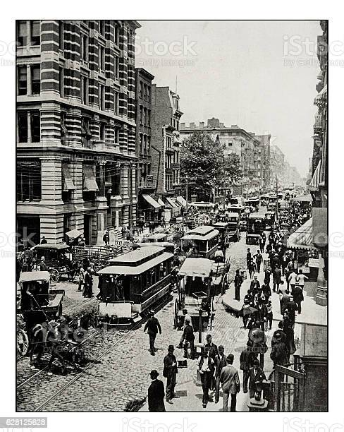
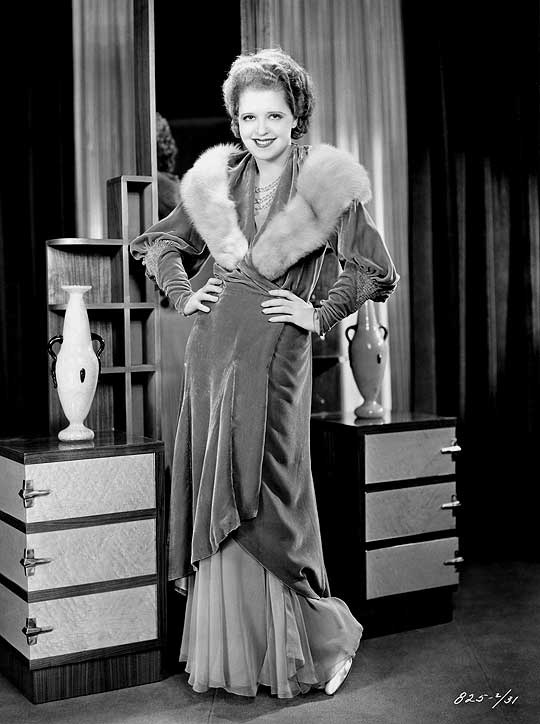
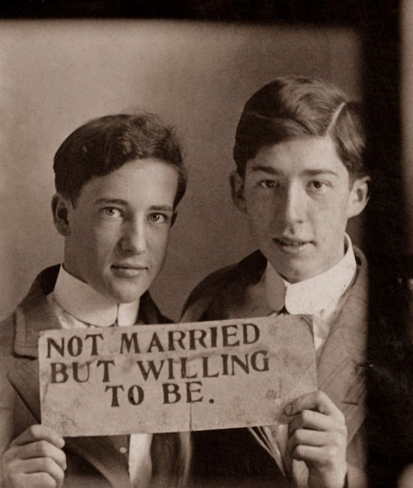
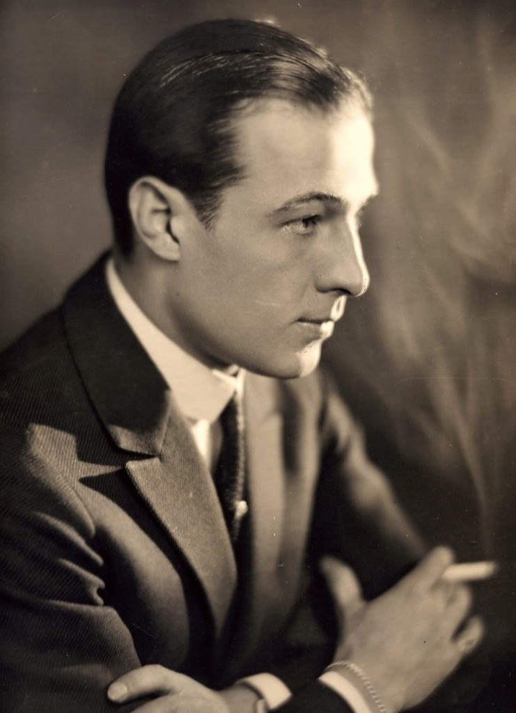

OS LOUCOS ANOS 1920 NOS EUA - O CRASH DE 1929 - NEW DEAL
CONTEXTO
Roaring Twenties ou em tradução livre, "Os loucos anos 20" faz referência a década de 1920, que ficou marcada como uma década de avanços econômicos e de grande modificação da cultural nacional. Pois o EUA havia produzido e exportado insumos para os participantes da Primeira Guerra Mundial, assim havia capital suficiente para dominar outros mercados como a América Latina|  |
|---|
| Vista de New York (1923) |
A economia dos Estados Unidos, que havia passado com sucesso de uma economia de guerra para uma de paz, prosperou e também forneceu empregos. A agricultura e a mineração de carvão, em particular, estavam entre os setores que sofreram uma desaceleração. Os Estados Unidos da América tornaram-se o país mais rico do mundo per capita, sendo o maior em termos de PIB total desde o final do século XIX. Sua indústria era baseada na produção em massa e sua sociedade era consumista. As economias europeias, por outro lado, experimentaram um ajuste pós-guerra mais difícil e só começaram a florescer por volta de 1924.
Estes avanços ocorreram nas grandes cidades como New York, Chicago, Londres, Berlim e etc… Então há um crescimento industrial sem precedentes, muitas das grandes lojas atuais surgem nesse período, tecnológica e inovação estão a todo vapor. E os loucos anos 20 são encerrados junto à Terça feira Negra onde uma grande Depressão se espalha pelo mundo, causando grande sofrimento a população.
FATOS PRINCIPAIS
|  |
|---|
| Atriz americana Clara Bow |
|  |
|---|
| Casal homoafetivo na década de 20. No cartaz diz: "Não casado, mas disposto a ser" |
Nessa década também nascem as empresas Gucci em 1921 na Itália e Adidas em 1924 na Alemanha. Os carros comuns baixaram de preço e finalmente as camadas populares passaram a adquirir carros. No campo da medicina a Insulina foi descoberta e aplicada em grande escala para tratamento de diabetes.
No Brasil a construção do Cristo redentor foi iniciada em 1922, sendo concluída na próxima década, nesse mesmo ano ocorre no teatro municipal de São Paulo, a semana de arte moderna que reuniu escritores, interpletes, escultores, arquitetos... Sendo um grande marco para a cultura Brasileira e mundial. O samba original surge sendo representando por Noel Rosa e Mário Reis. As lojas Renner nasce em 1922 e as lojas Americanas em 1929.
DESDOBRAMENTOS
|  |
|---|
| Ator Italiano Rodolfo |
Dois fatores são descartados para explicar a crise sendo eles: A superprodução agrícola e a diminuição do consumo, já que o poder aquisitivo da população não aumentou, assim eles não podiam consumir os excedentes, causando a desvalorização dos produtos. Foi um final de década terrível em todos os aspectros, entre 1929 e 1932, verificou-se a falência de 3463 bancos e 84 mil indústrias, milhões de estadunidenses ficaram desempregados, logo em segida passaram fome e passaram a mora na rua. Os EUA também interrompe durante esse período as importações de produtos, incluindo o café brasileiro, isso causou grande desemprego no ramo cafeicultor, resultado de um ciclo onde as exportações param, o produto acumula, desvaloriza e a produção é suspensa. Para não gerar gastos as empresas com pagamento de salários, ocorrem as demissões.
Em 1932, o candidato democrata Franklin Roosevelt foi eleito, prometia livrar o país da crise. Para tanto ele optou por uma intervenção do Estado na economia, já no poder, ele lançou o New Deal (ou traduzido: Novo acordo) um plano sagaz de intervenção e planejamento do Estado na economia com o objetivo de:
Diminuição da jornada de trabalho.
Fixação de um salário digno para os trabalhadores.
Limitação da produção industrial às necessidades reais dos consumidores, agregando valor aos produtos que tinham sido desvalorizados.
Seguro-desemprego e seguro-velhice para os maiores de 65 anos.
Investimento de 4 bilhões em obras públicas, o dinheiro foi usado na construção de usinas hidrelétricas, hospitais, aeroportos, escolas, etc.
Essas medidas, tiveram efeitos positivos no país e em 1933 a renda nacional começou a crescer, foram criadas muitas vagas de emprego e as pessoas recuperaram seu poder de compra.
CONCLUSÃO
Os anos 20 foi um período de rompimento com antigos hábitos da sociedade e o surgimento da modernidade. Algo que chama a atenção durante essa crise, foi o aumento de crédito dos consumidores que obviamente fez com que milhares de pessoas não fizessem o pagamento das prestações. A crise de 1929 foi a maior crise da história do capitalismo e se estendeu até o ano de 1933.REFERÊNCIAS
Roaring Twenties. Wikipédia. 2022. Disponível em: <https://pt.m.wikipedia.org/wiki/Roaring_Twenties> Acesso em: 1 de Abril de 2022.DÉCADA DE 1920: Tudo que aconteceu nos “LOUCOS ANOS 20” no Brasil e no Mundo. Canal Biologia & historia. Disponível em: <https://youtu.be/28A8JW8RME4> Acesso em: 1 de Abril de 2022.
BOULOS, Alfredo. História, Sociedade & Cidadania. Volume 3. 2016 p.78-83
Imagens:
Capa
{kind=link}
Casal homoafetivo na década de 20.
{kind=link}
Vista de New York (1923)
Ator Italiano Rodolfo
{kind=link}
Atriz americana Clara Bow
{kind=link}